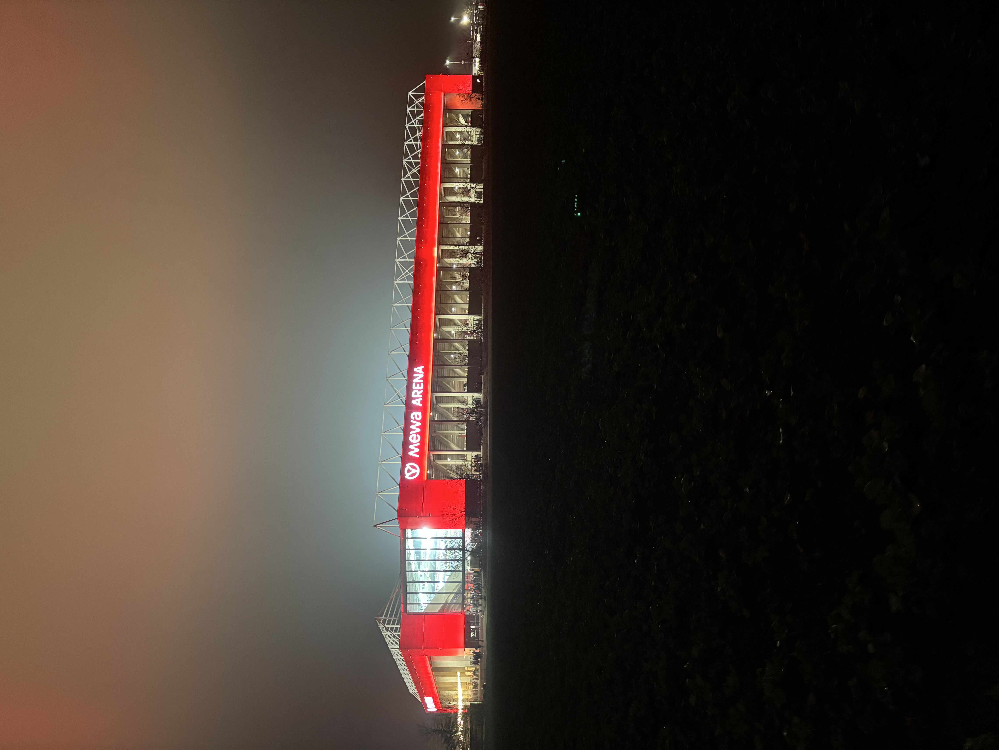
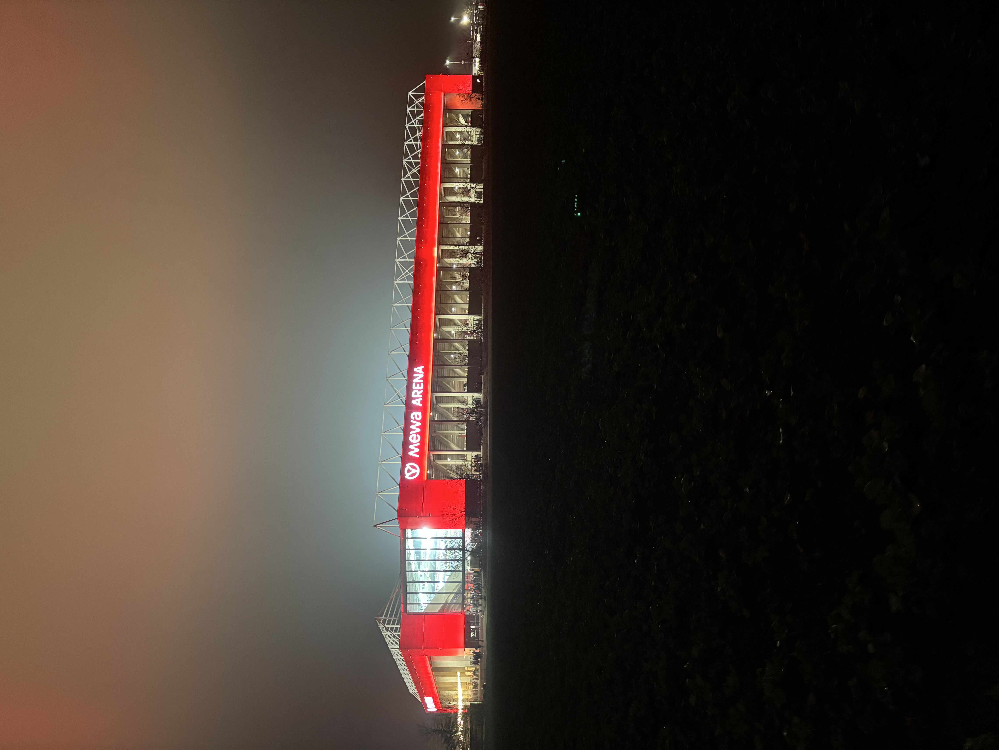

Outside Work
In my spare time, I really enjoy running. More recently, I have also started going to the gym (though I am afraid it has become more of a substitute than a complement to my running).
Football
On weekends, you will usually find me groundhopping across football stadiums. I have been a huge football fan since childhood, and I love experiencing the unique culture, history, and atmosphere of different clubs and regions.
 
